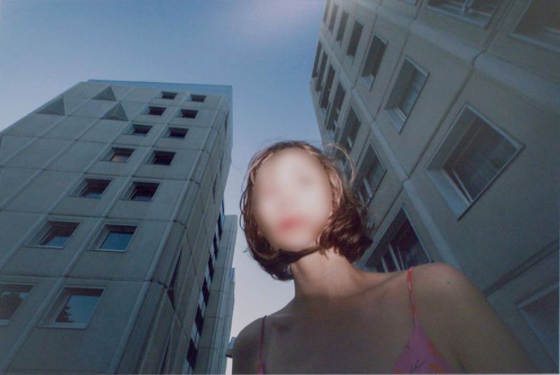

Studierejser
Alle linjer kommer på 4 - 5 dages studierejse til en europæisk by i løbet af kurset. Vi besøger udstillinger, design- og kunstskoler og går i det hele taget på opdagelse i byerne.
I foråret 2020 tager Billedkunst A og B samt Fotografi til Glasgow, Arkitektur og Design tager til Stockholm. Beklædningsdesign tager til Paris. Udgifter til rejse og indkvartering er indeholdt i kursusbetalingen.
Elevernes instagrambilleder fra #verarejse nedenfor.
